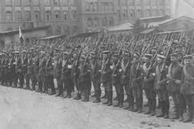

Polskie powstania narodowe
Polskie powstania narodowe
Powstać jak feniks z popiołów
'Powstać na nowo po całkowitym zniszczeniu'; zwrot, w mitol. grec. Feniks
– legendarny ptak z Etiopii, który pod koniec długiego życia spalał się na stosie,a z popiołów odradzał się na nowo.
Stał się symbolem odmłodzenia i zmartwychwstania.
Takiego właśnie zmartwychwstania doświadczała Polska na przestrzeni swojej 1050 letniej historii.
III powstanie śląskie

III powstanie śląskie było ostatnim zbrojnym zrywem polskiej ludności na Śląsku w 1921 r.
Ważyła się wtedy sprawa przynależności państwowej tego obszaru, należącego wcześniej do państwa niemieckiego.
Powstanie niepodległej Polski w 1918 roku wzmogło działający tam polski ruch narodowy, zwalczany przez niemiecką administrację i wojsko.
W nocy z 2 na 3 maja rozpoczęło się III powstanie. Na jego czele stanął znany działacz społeczny, a wcześniej komisarz plebiscytowy Wojciech Korfanty.
"Zwycięstwo osiągniemy za wszelka cenę i nie ma takiego mocarza na świecie, który by mógł nas okuć ponownie w kajdany germańskie" - pisał 3 maja w odezwie do rodaków Korfanty.
Walki trwały dwa miesiące - powstańcy zdołali opanować prawie cały obszar plebiscytowy, później broniąc go przed siłami niemieckimi.
Najpoważniejsze starcia miały miejsce w okolicach Góry św. Anny.
W III powstaniu śląskim wzięło udział około 60 tys. Polaków -1218 spośród nich poległo, 794 odniosło rany.
W wyniku tego zrywu Rada Ambasadorów zdecydowała o korzystniejszym dla Polski podziale Śląska.
Z obszaru plebiscytowego, czyli ponad 11 tys. km kw., zamieszkanego przez ponad 2 mln ludzi, do Polski przyłączono 29 procent terenu i 46 procent ludności.
W Polsce znalazły się m.in. Katowice, Świętochłowice, Królewska Huta (obecny Chorzów), Rybnik, Lubliniec, Tarnowskie Góry i Pszczyna.
Podział był też korzystny dla Polski gospodarczo - na przyłączonym terenie znajdowały się 53 z 67 istniejących kopalni, 22 z 37 wielkich pieców oraz 9 z 14 stalowni.